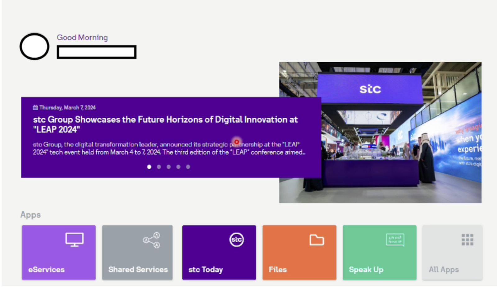
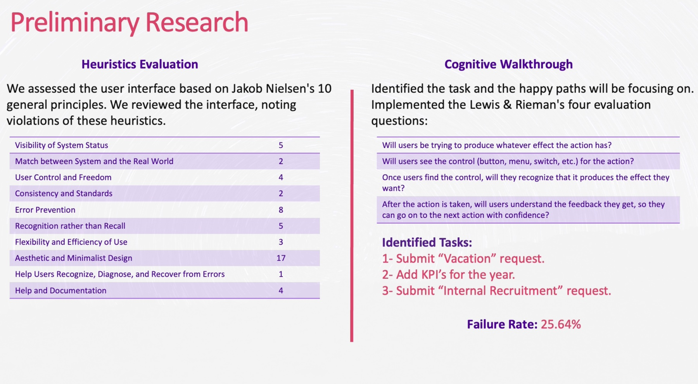

Chapter one
Built by departments, not designers.
The context
A portal everyone uses, designed for no one in particular.
Every service in STC Hub was built for internal operations — not for the employee using it. Vacation requests, KPI submissions and internal recruitment are high-stakes tasks with no room for confusion, yet each one followed its department's logic instead of the user's.

Before testing
We already knew something was wrong.
Two expert evaluations ran before a single user sat down. Both pointed at the same gap.
Heuristic violations across all 10 of Nielsen's principles — most severely in Aesthetic & Minimalist Design.
Predicted failure rate from a cognitive walkthrough (Lewis & Rieman's 4 questions) — 1 in 4 steps expected to fail.
Violation breakdown
Where the 56 violations clustered.

The core finding
The system worked. The experience didn't. Those are not the same thing.
100%
Task completion across all 5 participants and 3 tasks
−40
Net Promoter Score — 60% detractors
65
SUS — just below the 68 “acceptable” threshold
5.0
Average ASQ on Task 2 (1 = satisfied, 7 = not)
Users could technically do their jobs — but every interaction cost them time, trust, and confidence.
Chapter two
5 employees. 3 tasks. One think-aloud protocol.
Research setup
From expert review to real people, in five steps.
Heuristic evaluation
56 violations across all 10 Nielsen principles.
Cognitive walkthrough
Lewis & Rieman's 4 questions per task. 25.6% failure rate.
Recruitment
Highest-volume HR service users, found via usage data.
Think-aloud
5 × 1-hour Zoom sessions on the live portal.
ASQ · SUS · NPS
ASQ after each task; SUS and NPS at the end.
Participants
Active employees from procurement — the heaviest users of these services.
Submit a vacation request
Request annual leave while delegating a colleague to cover.
Add KPIs for the year
Find the KPI portal and add annual objectives as a new employee.
Apply internally
Find and apply for a managerial role in another department.
What the data said
Three instruments. One signal: tolerable when familiar, frustrating everywhere else.
System Usability Scale
Above average — barely
The industry “acceptable” line is 68. STC Hub sits just under it.
Net Promoter Score
Critical dissatisfaction
Systemic trust erosion, not isolated friction.
After-Scenario Questionnaire
KPIs were the worst task
1 = satisfied · 7 = not satisfied.
Completion time vs ideal
Think-aloud adds talking time, so anything over ideal + 1:50 was flagged as an efficiency failure (red). 40% of users also left the optimal path on Tasks 2 & 3.
Chapter three
Four categories of failure. One root cause.
What we found
Every problem across the five sessions fell into one of four categories — all symptoms of services built by departments for departments. We rated each issue on Nielsen's 0–4 severity scale.
Workflow opacity
No visibility into what happens after submission — no approval chain, no SLA, no next steps.
Vacation requests show no workflow — users don't know if their manager will be notified.
Expandable workflow preview before submission
The delegated colleague can't approve or reject — they're only notified after the fact.
Approve/reject step before the request reaches management
The KPI workflow changes every year, with no visible current-year flow.
Auto-updated flow display synced to HR changes
Recruitment confidentiality policy is never communicated — causing anxiety and deterring use.
Surface the HR policy directly in the service
Navigation & discoverability
40% of users left the happy path on Tasks 2 & 3. Services were buried or split across platforms.
KPI submission lives on a separate platform (Add'e) — users lose context immediately.
Consolidate into a single portal interface
Internal recruitment redirects to an external site — users feel lost.
Embed it, or create clear wayfinding back
Users took up to 35 seconds to find the KPI service vs a 25-second ideal.
Search and shortcuts on the main dashboard
Automation & integration gaps
The system kept asking for information it already had.
After picking vacation dates, users re-enter the same dates for delegation.
Auto-populate delegation dates from the vacation
KPI question sets must be re-selected for every KPI, even when identical.
Carry questions forward, with an override
Uploading a CV populates nothing — users re-type everything.
Parse the CV and pull known data from the HR database
User knowledge gaps
Users knew what to do. They didn't know how the system expected them to do it.
Tasks 2 and 3 needed researcher help — there's no in-service guidance anywhere.
Contextual service manuals inside each workflow
KPI fields like “target weight” and “target type” confused every participant.
Inline field descriptions with examples
After applying internally, users hear nothing unless called for interview.
Application status tracker with a visible timeline
Recommendations
15+ prioritised recommendations. Filter them.
Every recommendation maps to a finding and is rated by severity — scoped, justified and ordered by impact. The twelve with the clearest evidence are below.
Chapter four
What changed. What I'd do next.
A 100% completion rate isn't success. It's the floor. Real UX success is whether people come back — and trust the system enough to use it without anxiety.
Reflection
Usability metrics don't tell the full story. SUS was 65 — technically functional. NPS was −40 — actively damaging. Both were true at once, and the gap between them is where the real design problem lived.
Testing real employees on a live enterprise system across time zones pushed our rigour further than a lab would. We couldn't break anything or invent tasks — we had to be precise about what we measured and why.
The biggest lesson: when a system makes people feel incompetent at tasks they've done dozens of times, that's not a usability problem. It's a design-philosophy problem.
Next time
- Run a follow-up round after the high-severity fixes ship
- Include participants beyond procurement
- Test lightweight wireframe solutions alongside the issues
- Present findings directly to the STC product team
Academic project · HCI 460 · DePaul University · Research conducted with real STC employees under institutional consent protocols.